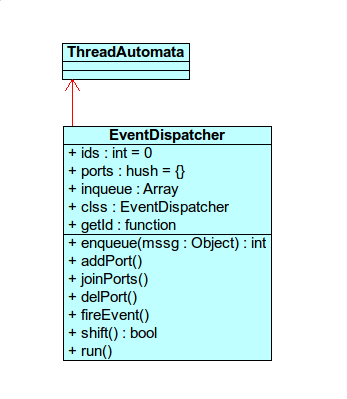

lluvia Project lesson
lluvia load log
Controlador de eventos
En lluvia tenemos una clase controladora de eventos, EventDispatcher. Los métodos de esta clase se encargan de almacenenar hilos, mensajes de petición que se reciban de otra aplicación, de contestar, de abrir puertos donde guardar eventos y los punteros a funciones de otras aplicaciones, elminar eventos y puertos y ejecutar métodos run de los hilos almacenados.
Conclusión
nnnnnnnnnnnnnnnnnnnnnnnnnnnnnnn
Diagrama

La clase EventDispatcher contiene cinco atributos:
El atributo ids contiene el número de mensajes almacenados en inqueue.
El atributo ports contiene un hush con todos los eventos almacenados que a su vez contienen las referencias a los métodos de otras aplicaciones.
inqueue contiene los mensajes recibidos de la aplicación en cuestión.
clss es la referencia del objeto que se está creando de esta clase.
El atributo getId contiene la referencia a una función que incrementa el atributo ids (se usa cuando almacenamos un mensaje nuevo de tal manera que el número total de mensajes, atributo ids, se incrementa en uno).
En esta clase también disponemos de siete métodos.
.enqueue almacena los mensajes recibidos en un array. También devuelve el número identificador del mensaje recibido.
.addPorts recibe el nombre de un evento y un puntero a un método. Cuando está aplicación ejecute uno de sus eventos almacendos llamará, a través de las referencias almacenadas, a métodos de otras clases para que se ejecuten simultáneamente.
.joinPorts añade los eventos al array ports.
.delPort elimina alguna o varias referencias a los objetos que haya almacenados en un puerto especificado.
fireEvent coge el elemento e y llama a todos los métodos referenciados en tal evento.
.shift busca en la sala de mensajes la siguiente petición "activa" y lo envía a device para ser atendido.
.run básicamente llama al método shift para ejecutar una petición recibida.